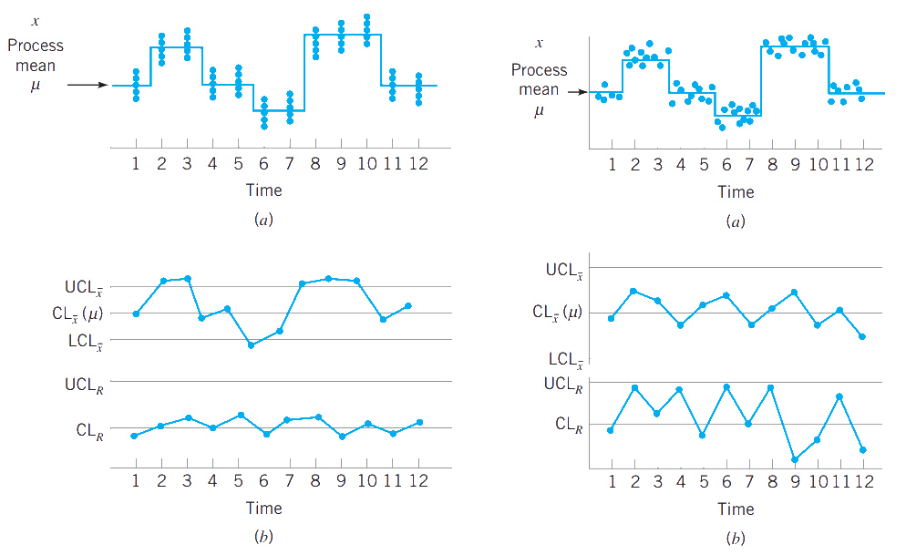
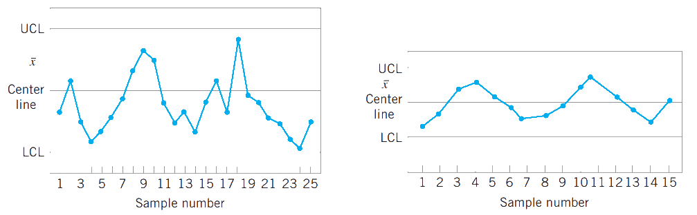

IEST 422 - 2022/02
Eloy Alvarado Narváez
Universidad de Valparaíso
29/09/22
En la clase anterior, hemos recalcado la importancia de los diagramas de control, en ellos se establecen los bandas de control para definir si un proceso está actuando dentro de parámetros esperados. En lo que sigue veremos como se determinan estos límites.
La elección es los límites de control es crucial para el control estadístico de procesos, pues son los umbrales desde los cuales la empresa debe tomar acciones correctivas. Si movemos los límites de control lejos de la línea central, estaremos reduciendo el riesgo de cometer un error tipo I, pero a la vez estaremos incrementando el riesgo de cometer un error tipo II (que un punto esté dentro de las bandas, pero que en realidad está fuera de control).
Si movemos los límites de control más cerca de la línea central, el efecto contrario ocurre.
Como hemos visto antes, estas bandas son intervalos de confianza, en los cuales independiente de la distribución de la característica importante para la calidad se utilizan bandas en múltiplos de su desviación estándar.
Usualmente, se justifica una banda de 3 sigma dado que han dado buenos resultados en la práctica, sin embargo, en los casos en donde la verdadera distribución de la característica en estudio no del todo conocida, el cálculo de estos límites se dificulta.
Algunos analistas sugieren utilizar dos límites o bandas de control en los diagramas de control, tal como se ve en la figura anterior. Las bandas exteriores, usualmente, se definen como límites de acción y activarán una búsqueda activa de alguna causa asignable para ser corregida.
En cuanto a los límites interiores, se definen usualmente como límites de advertencia. Si uno o más puntos caen dentro de estas bandas (o muy cercano al límite de advertencia), debemos sospechar que el proceso podría no estar operando correctamente.
Una posible medida a tomar en estos casos es aumentar la frecuencia de muestreo o aumentar el tamaño de muestra. Esquemas de control estadístico de procesos que admiten un cambio en el tamaño de muestra o en la frecuencia de esta, se les llama muestreo adaptativo.
El uso de límites de advertencia incrementará la sensibilidad del diagrama de control, esto es, permite al diagrama identificar más rápidamente cambios en el proceso en estudio.
Una desventaja del uso de estos límites, es que tiende a confundir al personal.
Otra desventaja, es que aumenta el riesgo de falsas alarmas.
En el diseño de un diagrama de control, debemos especificar el tamaño de muestra y la frecuencia de muestreo. En general, muestras más grandes harán más fáciles detectar cambios en el proceso.
En cuanto a la frecuencia de muestreo, idealmente desearemos tomar muestras grandes lo más frecuente posible, pero usualmente esto no es posible debido a restricciones económicas. Así, el problema es determinar el esfuerzo de muestreo, esto es, o tomamos pequeñas muestras a cortos intervalos de tiempo o tomamos muestras grandes a intervalos largos de tiempo. En la actualidad, se tiende a optar por la primera opción: muestras pequeñas a intervalos regulares cortos.
Otra forma de evaluar la decisión entre tamaño de muestra y frecuencia de muestreo es a través del coeficiente ARL: average run length del diagrama de control. Este coeficiente, es el promedio de número de puntos que deben ser graficados antes que un punto indique que el proceso esté fuera de control. Si las observaciones del proceso son no correlacionadas, entonces el ARL se calcula como:
\[ARL=\dfrac{1}{p}\]
donde \(p\) es la probabilidad que un punto exceda los límites de control.
Supongamos que se obtiene un \(ARL=370\), esto significa que incluso si el proceso se mantiene bajo control, esperaremos en promedio que una observación cada 370 caiga fuera de las bandas de control.
Debido a que la distribución subyacente es una distribución geométrica, destacan dos preocupaciones:
La desviación estándar del run length es muy grande
La distribución geométrica es muy asimétrica, por lo que la media de la distribución (ARL) no es necesariamente un valor representativo de la variable en estudio.
Ocasionalmente es conveniente expresar el desempeño de un diagrama de control en términos del tiempo promedio en que ocurre una señal, o ATS por sus siglas en inglés (average time to signal). Si las muestras son tomadas a intervalos regulares de tiempo que están separados por \(h\) horas, entonces:
\[ATS=ARL*h\]
Una idea fundamental en el uso de diagramas de control es la recolección de datos muestrales de acuerdo a lo que Shewhart llamo como subgrupos racionales.
Supongamos que utilizamos un diagrama de control \(x\) para detectar cambios en la medio del proceso. Entonces, el concepto de subgrupo racional significa que subgrupos o muestras deben ser seleccionadas tal que si una causa asignable está presente, la probabilidad para la diferencia entre subgrupos sea maximizada, mientras que la probabilidad de diferencia debido a estas causas asignables dentro de un subgrupo sea minimizada.
Cuando un diagrama de control se aplica a un proceso productivo, el orden del tiempo de producción es una base lógica para subgrupo racional. Incluso si el orden del tiempo se preserva, es posible formar grupos erróneamente.
En general dos tipos de enfoque son aplicados para la construcción de subgrupos racionales:
En el primero, cada muestra consiste en unidades que fueron producidas al mismo tiempo (o muy cercanas entre sí). Idealmente, quisiéramos tomar unidades consecutivas de producción. Este enfoque es utilizado cuando el objetivo principal del diagrama de control es detectar cambios en el proceso: minimiza la probabilidad de variabilidad debido a causas asignables dentro de una muestra, y maximiza la probabilidad de variabilidad entre muestras si una cauga asignable se presenta.
En el segundo enfoque, cada muestra consiste en unidades de producto que son representativas de todas las muestras que han sido producidas desde que fue tomada la última muestra. Esencialmente, cada subgrupo es un muestreo aleatorio de todas las salidas del proceso sobre el intervalo de muestreo. Este método de subgrupos racionales es frecuentemente usado cuando un diagrama de control es empleado para tomar decisiones sobre la aceptación de todas las unidades de un producto que han sido producidas desde la última muestra.
Si bien estos dos enfoques son los principales, dependiendo de la naturaleza del proceso, otro tipo de subgrupos racionales pueden ser utilizados. ## Subgrupos racionales: 2 enfoques
Los patrones en un diagrama de control deben ser estudiados cuidadosamente. Un diagrama de control puede indicar una condicional fuera de control cuando uno o más puntos caen fuera de los límites de control o cuando los puntos muestras un patrón o comportamiento no aleatorio.
Así, el problema es reconocer patrones. La habilidad de interpretar un patrón particular en término de causas asignables requiere experiencia y conocimiento del proceso. Esto es, además de saber los principios estadísticos de los diagramas de control, debemos entender la naturaleza del proceso en estudio. En la literatura se sugieren las siguientes reglas para detectar patrones no aleatorios en diagramas de control. Específicamente, se sugiere concluir que el proceso está fuera de control si:
Un punto está fuera de las bandas 3-sigma
Dos de tres puntos consecutivos caen fuera de la banda de advertencia 2-sigma
Cuatro de cada cinco puntos consecutivos están a una distancia de 1-sigma o más desde la línea central o
Ocho puntos consecutivos caen en el mismo lado de la línea central
Estas reglas aplican a cada lado de la línea central.
Adicionalmente, a las reglas anteriores se agregan:
Seis puntos consecutivamente incrementan o decrecen
Quince puntos seguidos en la zona C
Catorce puntos seguidos alternándose sobre y bajo la línea de central
Ocho puntos seguidos en ambos lados de la línea central sin ninguno de ellos en la zona C
Un patrón inusual o no aleatorio en los datos
Uno o más puntos cerca los límites de advertencia o control
IEST 422 - Semana 5